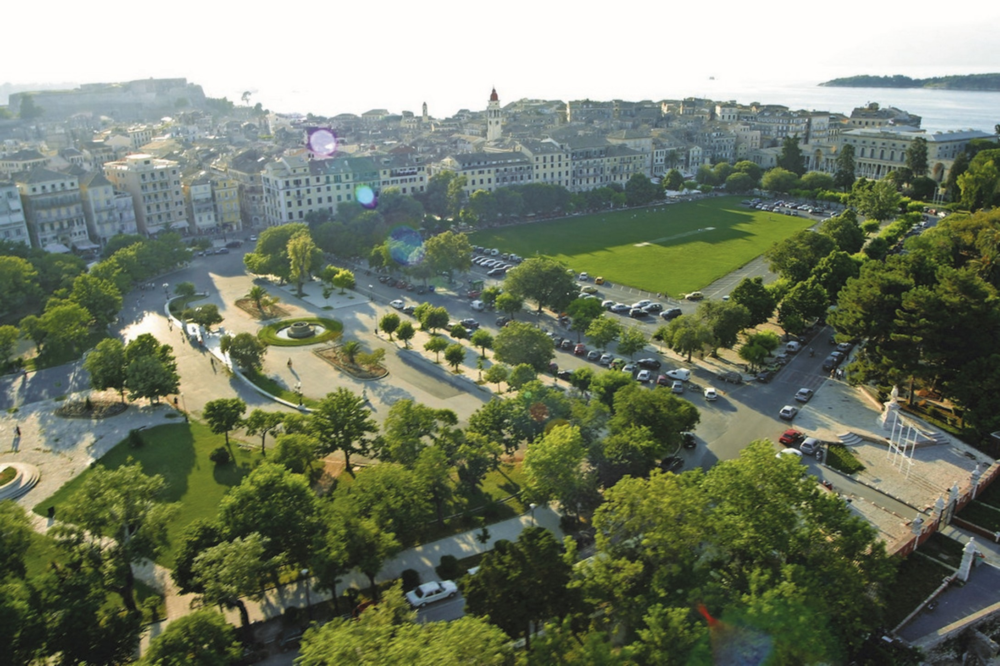
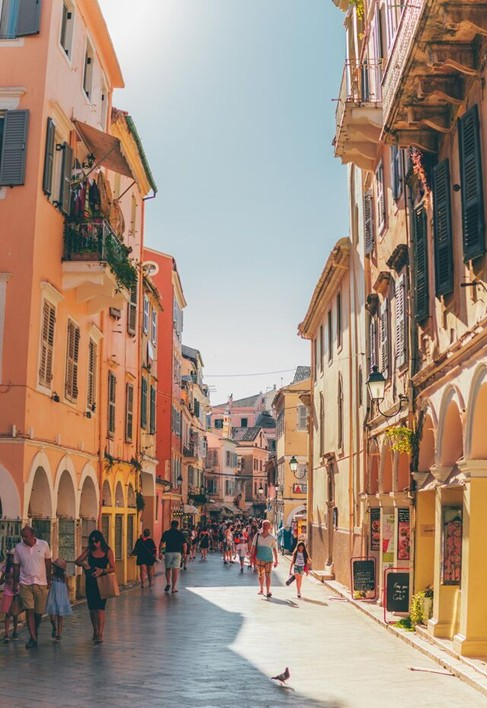
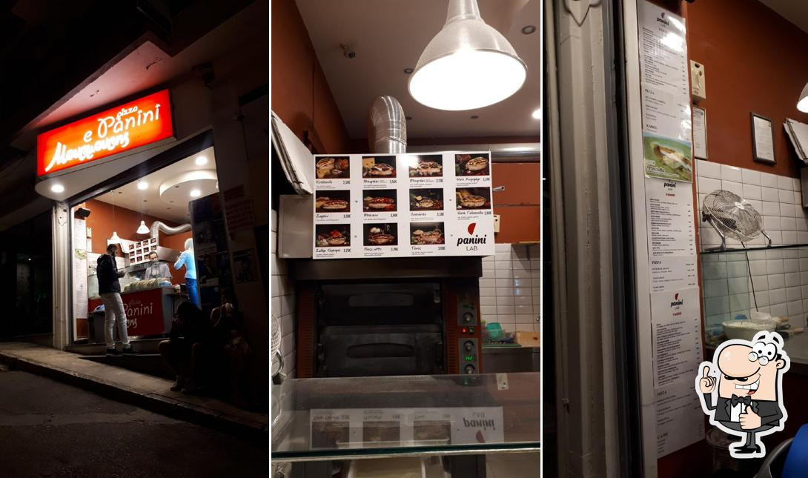
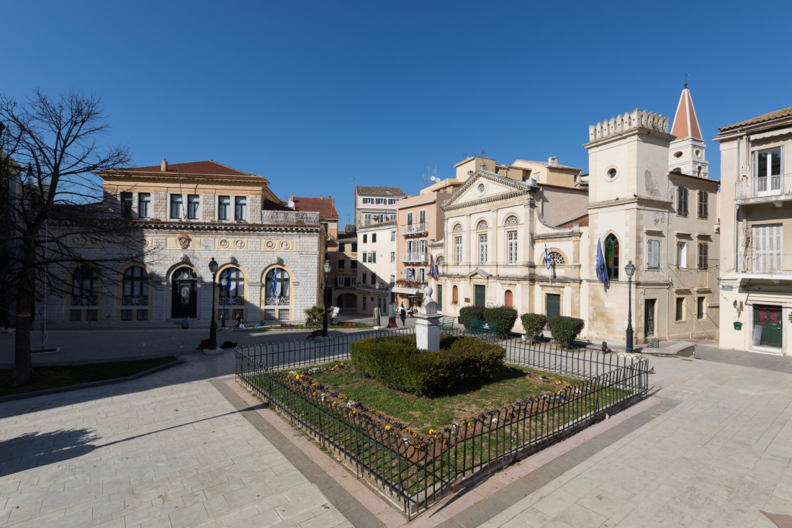
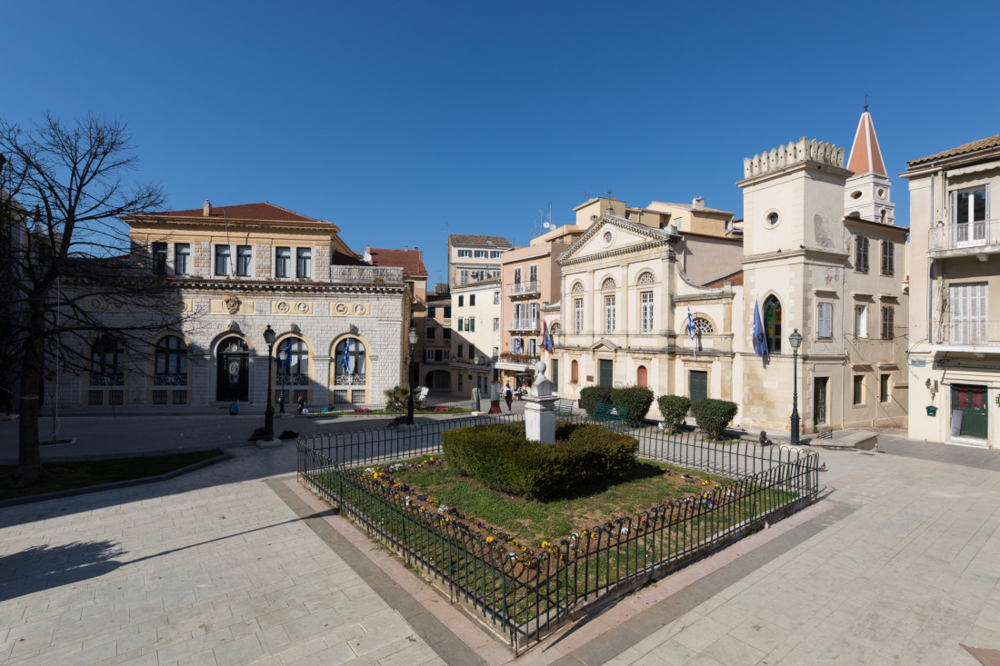

Spianada & Liston

The Spianada is the largest square in the Balkans. Next to it, the Liston with its arches and cafés invites visitors to relax. Built in 1810, it was inspired by Paris' Rue de Rivoli. On weekends, you might even catch a cricket match here!
Saint Spyridon

Patron saint of Corfu, Saint Spyridon is both revered and deeply loved by locals. His church, with its tall bell tower, houses his relics and is a pilgrimage site for many. Locals affectionately call him simply "The Saint" or "Agios".
Strolling Through Old Town

Start at the Ionian Parliament, walk through Guildford Street, and explore the Town Hall and Catholic Cathedral. Don’t miss Casa Parlante museum or the atmospheric cantounia around Agios Spyridon.
The New Fortress

Fortezza Nuova is a Venetian fortress built on the hill of St. Mark in Corfu in stages. The original architect of the fort was the military engineer Ferrante Vitelli. A must walk by in Corfu Town.
St. Michel Temple in the Old Castle

Walking by the Boschetto and Spianada, heading to NOK AZUR for coffee, look at you right.
Pontikonisi & Vlaherena Monastery

Mouse Island and the Monastery of Vlaherna are iconic spots. Combine with a morning visit to Mon Repos estate and Kardaki beach. Legend says: Drink from the fountain and you’ll return to Corfu!
Don't Miss Street Food

Corfu vs Italy.
Nightlife
 

Avoid the harbor clubs if you're over 25. Choose stylish bars near the Loggia (Old City Hall - builded in 1530s) and Duomo. Try Bristol or NOK for drinks with a view.
Hidden Gems

Let yourself get lost in the "kantounia" and stroll through Cambiello. Skip the tourist tavernas and follow the locals—they know best.